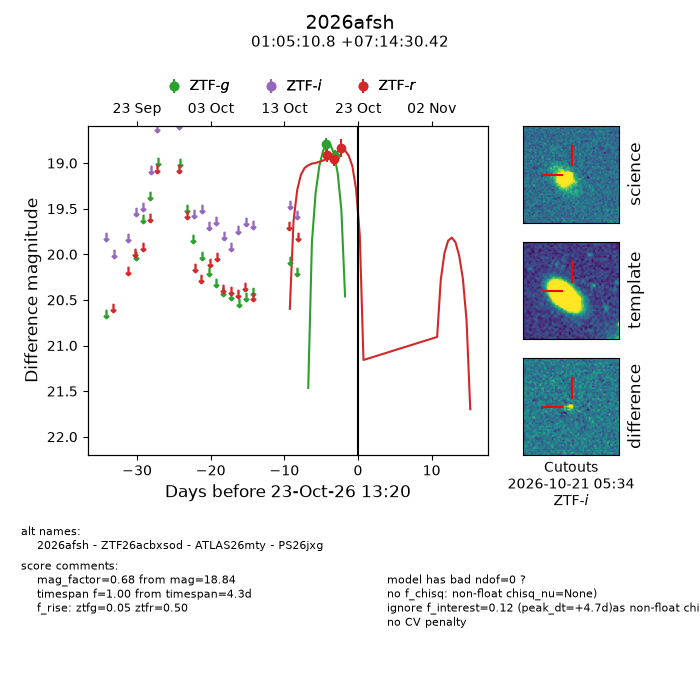
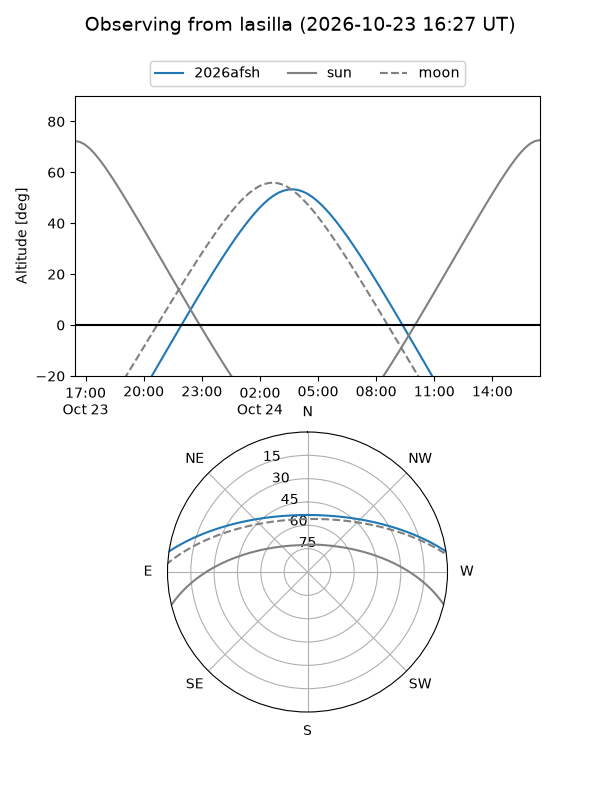
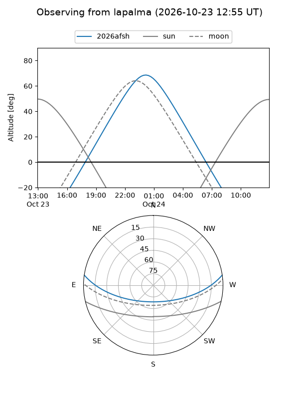
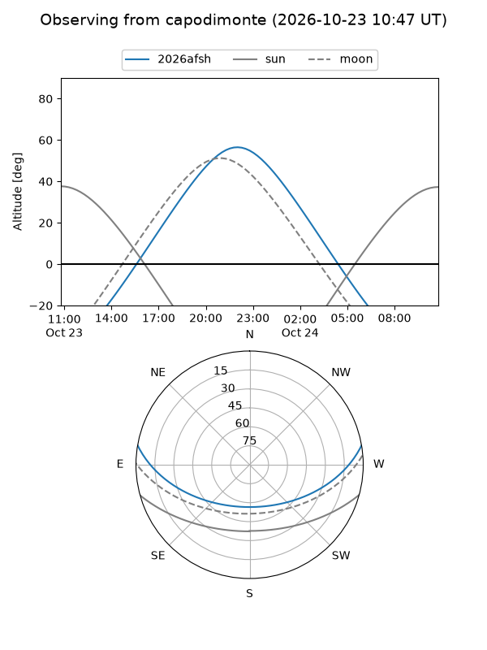
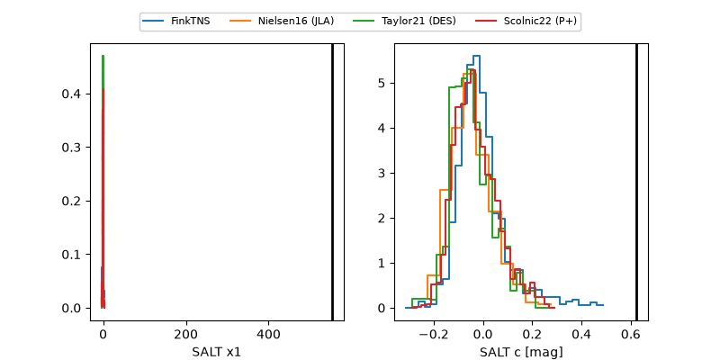

2026afsh
Target 2026afsh at 2026-10-23 13:22
Aliases and brokers:
FINK-ZTF: ztf.fink-portal.org/ZTF26acbxsod
Lasair-ZTF: lasair-ztf.lsst.ac.uk/objects/ZTF26acbxsod
ALeRCE-ZTF: alerce.online/object/ZTF26acbxsod
YSE-PZ: ziggy.ucolick.org/yse/transient_detail/2026afsh
TNS name: wis-tns.org/object/2026afsh
Direct TNS query: direct search
alt names
ZTF26acbxsod (ztf,fink_ztf)
2026afsh (tns,yse)
ATLAS26mty (atlas)
PS26jxg (panstarrs)
Coordinates:
equatorial (ra, dec) = 16.2950,+7.24178
equatorial (HMS+DMS) = 01:05:10.81,+07:14:30.42
galactic (l, b) = (128.9519,-55.46926)
Flags:
peak dt: +4.7
Photometry:
last ztfg=18.92, ztfr=18.84
2 ztfg, 3 ztfr detections
Lightcurve

Visibility



Additional plots
